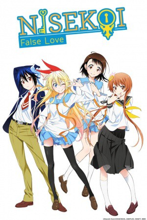

")
 
 IMDB-Wertung: 7.6 / 10
IMDB-Wertung: 7.6 / 10  Metascore:
Metascore: 
Die Liebe währt ewig! Als Kind machte Raku Ichijo ein Versprechen mit einer Kindheitsfreundin, mit der er ein gemeinsames Erinnerungsstück teilt. Während er ein Schloss nahm, hat seine Liebste den passenden Schlüssel. Mit dem großen Traum, seine frühere Liebe wieder zu finden, kommt Chitoge Kirisaki in sein Leben. Um den Frieden zwischen den beiden rivalisierenden, verbrecherischen Familien Clans zu schmieden, müssen Raku und Chitoge eine Beziehung vortäuschen, obwohl die beiden kaum verschiedener sein könnten. Als Raku entdeckt, dass sowohl Chitoge als auch deren gemeinsame Freundin Onodera Kosaki jeweils einen Schlüssel aus ihrer Vergangenheit besitzen und immer mehr Mädchen sich um den Protagonisten scharren, kann die Romanze beginnen.
Jahr: 2014
Dauer: 24 Minuten
FSK: 12
Land: Japan Studio: Aniplex AmericaTonspuren: DD2.0 - ,
Untertitel: Deutsch,
Auflösung: 720p (1280x720) Größe: 128000 MB
Genre: Komödie, Animation/Trick, Liebe, TV-Serie
Regisseur: Akiyuki Shinbo, Naoyuki Tatsuwa
Drehbuch: Stephen Sommers
Soundtrack:
Darsteller:
 Takehito Koyasu als Claude
Takehito Koyasu als Claude Fumihiko Tachiki als Marika's Father
Fumihiko Tachiki als Marika's Father Takahiro Sakurai als Migisuke
Takahiro Sakurai als MigisukeDatei: X:\HD-Anime-Serien\Nisekoi\S01\Nisekoi E01 Das Versprechen.mkv seit 30.01.2017
Festplatte: Gemischt-01+Anime
 Es gibt insgesamt 67 Filme in der Gruppe 'HD-Anime-Serien'
Es gibt insgesamt 67 Filme in der Gruppe 'HD-Anime-Serien'